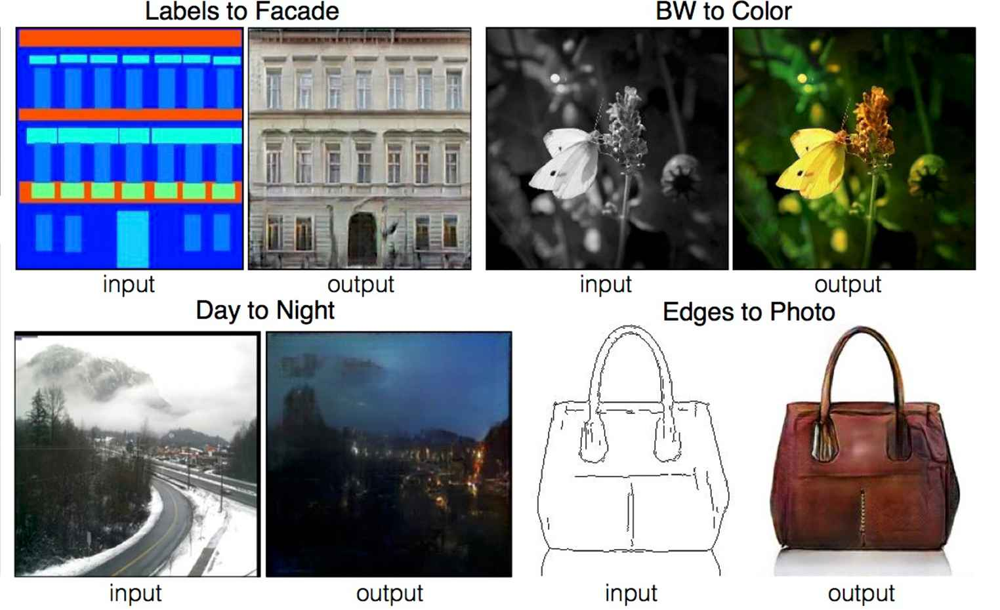
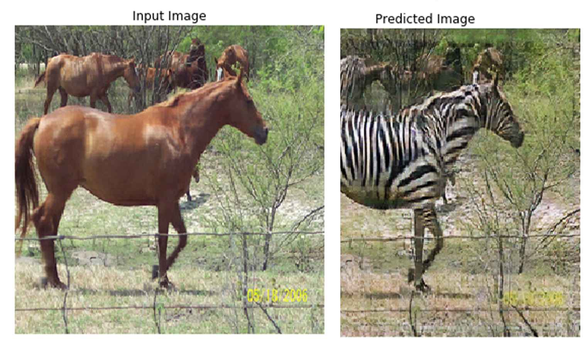

Implementation of Image to Image Translation with Conditional Adversarial Networks by Phillip Isola et al.

Implementation of Unpaired Image-to-Image Translation by Cycle-Consistent Adversarial Networks by Jun-Yang Zhu el al.
Facial Recognition using Siamese Neural Networks for One-shot Image Recognition. (Paper Implementation)
A Neural Network architecture for generating Melodies using Long Short Term Memory (RNNs).
This bi-modal deep learning structure combines data from two different domains (Audio & Lyrics) and reflects information that can not be covered by one domain. (Paper Implementation)
A VGG-style deep neural network has been used to learn and predict musically meaningful and intuitive explanation for its Music Emotion predictions. (Paper Implementation)
A group of Neural Network architectures for Classifing Music Genres using Convolutional Neural Networks & Recurrent Neural Networks.
A Speech Recognition Model for Keyword Detection using Convolutional Neural Networks.
A Neural network architecture for Classifing Sounds using Convolutional Neural Networks.